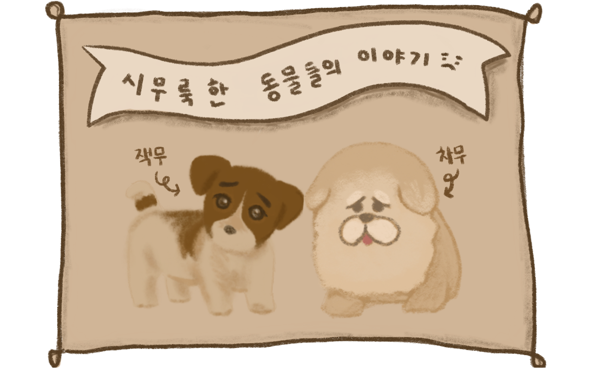
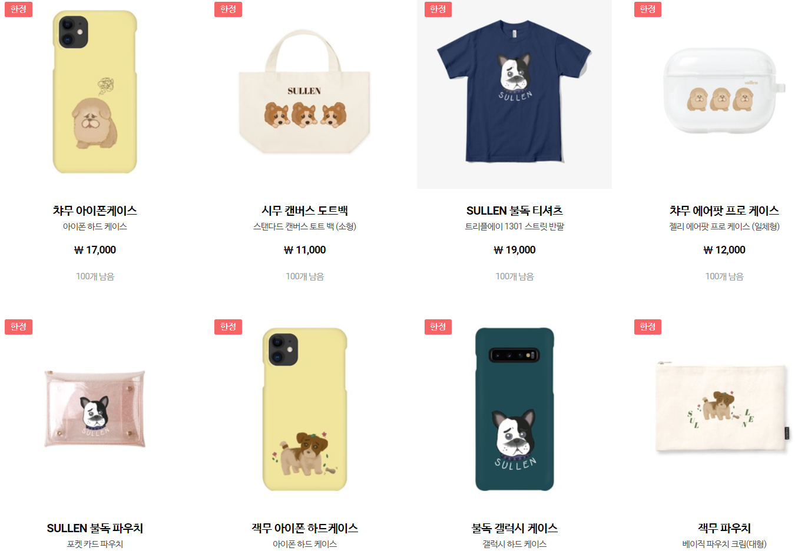

🐶 SULLEN 샵에 놀러오세요 🐶

SULLEN은 시무룩하다는 의미로,
꿍해보이는 표정이 매력적인 캐릭터들을 그립니다.
2020년 처음 마플샵에 입점하여
가방, 굿즈, 의류를 판매하고 있습니다.

챠무는 SULLEN의 대표 캐릭터로
복실복실한 갈색 털에 파묻힌 시무룩한 눈이 포인트입니다.
🔍 챠무가 시무룩한 이유는 ?
챠무는 집사가 잠시 방을 비운 사이에
책상 위에 있던 커피를 쏟았어요
그것도 집사가 열심히 쓰고 있던 다이어리에 말이에요
집사가 속상해할 걸 생각한 챠무는 시무룩해졌답니다 😧
SULLEN 네 강아지들이 어쩌다 꿍한 표정을 짓게 되었는지 궁금하다면
아래 링크를 클릭해주세요 💜